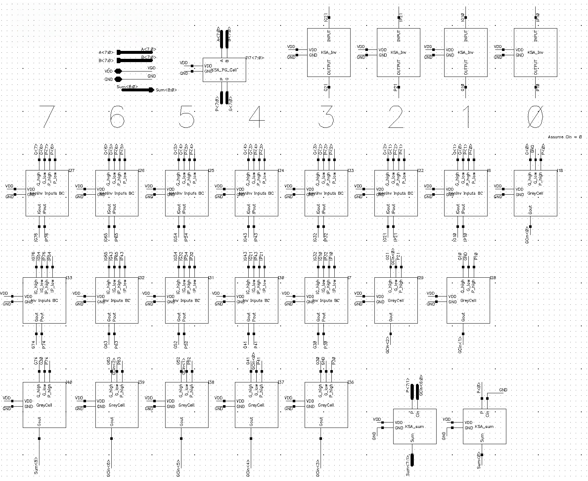

My Projects
Here are some of my projects, click for more details!

8-bit Kogge-Stone Adder
A high-speed 8-bit Kogge-Stone Adder (KSA) using static CMOS logic, designed and simulated in Cadence.


Cosmic Whisper
An educational game for people interested in optics and circuits, as part of research supervised by Professor Saharnaz, UCSD.


Modular Power Hub (IP)
A dual-input, multi-output automatic power selector for microcontrollers and small electronics with selectable voltage rails.


3D Optical Lights (IP)
Homemade 3D optical lights with extensive functionalities.


SonicCar
An intelligent voice-controlled autonomous vehicle using LLMs & object detection.


WearWise
WearWise, a smart IoT Wardrobe Management App


Bitcoin Hashing
Bitcoin hashing using SHA-256 as a cryptographic process that secures transactions on the Bitcoin network.